Team
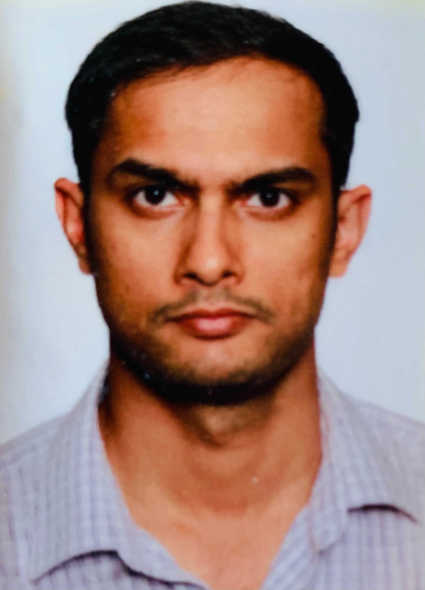
Sushant Kumar is the Canada Research Chair (Tier 2) in Genomic Medicine and an Assistant Professor in the Department of Medical Biophysics at the University of Toronto. He is also a scientist at the Princess Margaret Cancer Center. His expertise and research interests are in computational biology/bioinformatics, cancer biology, genomics, machine learning, and biophysics. Outside of work, he likes to watch sports documentaries and spend time with family.
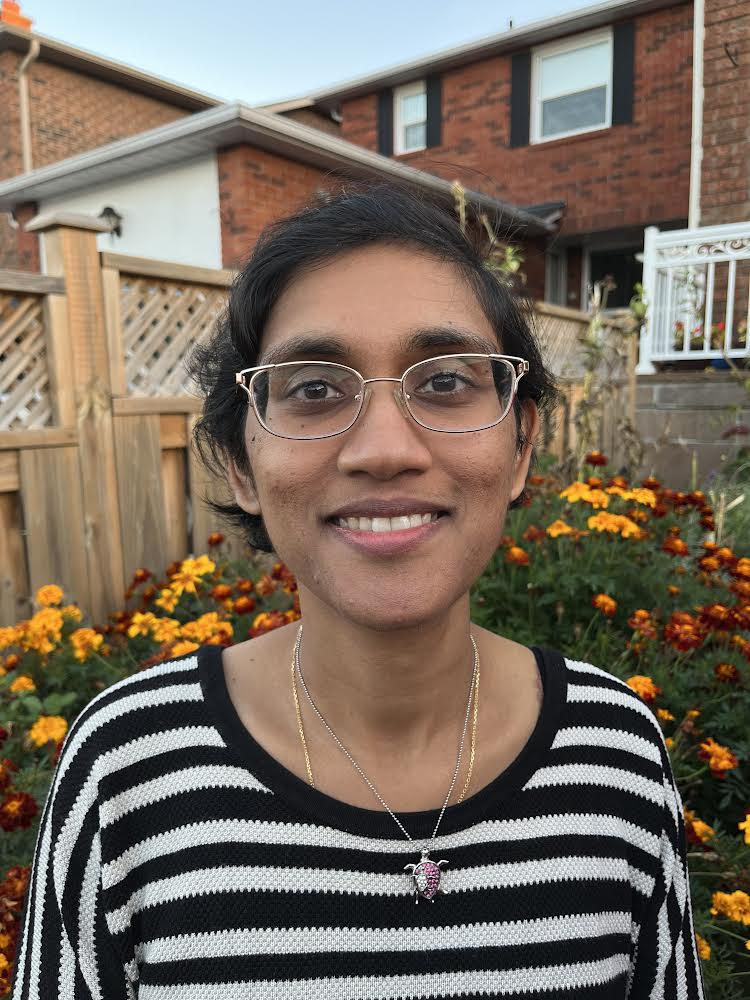
Nirvana Nursimulu is a postdoctoral researcher in the lab. She completed her undergraduate degree in Bioinformatics and Computational Biology at the University of Toronto, after which she embarked on a journey through graduate school at the University of Toronto studying Computer Science under the supervision of Dr Parkinson and Dr Moses. From her previous work, she remains fascinated by how mathematics can be used to capture biological phenomena and model the growth of parasites. In her free time, she enjoys reading and writing fiction, running, and has occasionally engaged in improvisational theatre.
Research interests: Metabolic rewiring in cancer
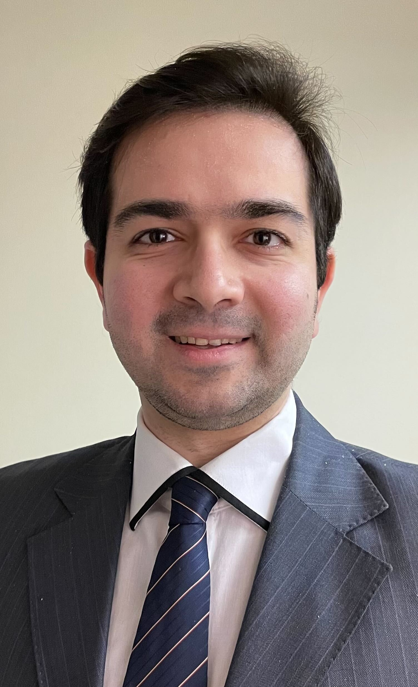
Saman Bazmi is a postdoctoral researcher in the lab. He completed his PhD in Computational Biophysics at Memorial University of Newfoundland. His research interests are computational biology, molecular dynamics, and cancer genomics. In his free time, he likes to watch criminal tv series, hiking, and cooking.
Research interests: DNA Structure and Dynamics, Machine Learning
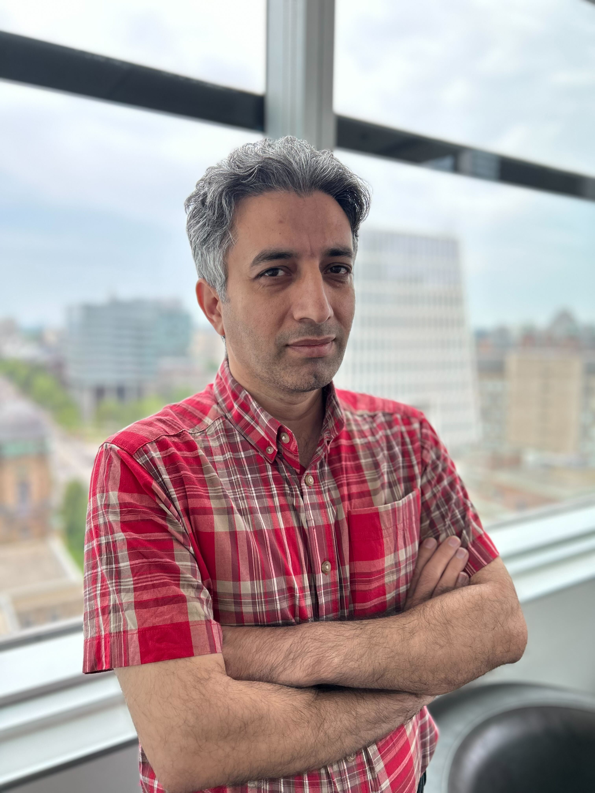
Yosef received his Ph.D. in Bioinformatics in 2019 from the University of Tehran and completed a year-long postdoctoral program. Before moving to UHN, Yosef held a faculty teaching position at the Tabriz University of Medical Sciences and then completed a two-year-long postdoctoral course at Queen's University. Yosef has over a decade of teaching experience (from undergraduate to Ph.D. level) in Bioinformatics. He is interested in introducing novel algorithms, developing machine learning methods, and designing efficient data structures for biological applications.
Research interests: Nucleosomes, Machine Learning
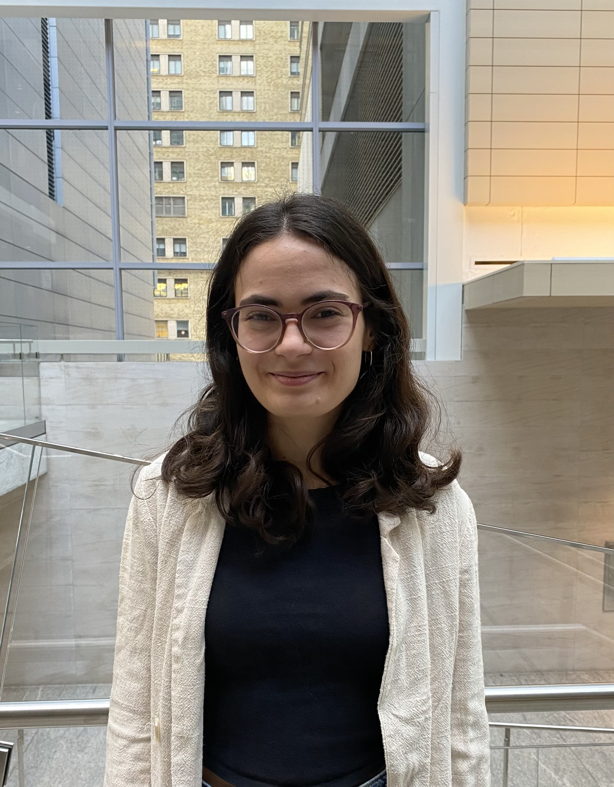
Nadejda Boev is a PhD student in the Department of Medical Biophysics at the University of Toronto. She completed her undergraduate degree in Biology & Mathematics at Queen's University. In her free time, she enjoys going on walks and listening to podcasts.
Research interests: DNA repair. rare disease and cancer genetics, DNA shape
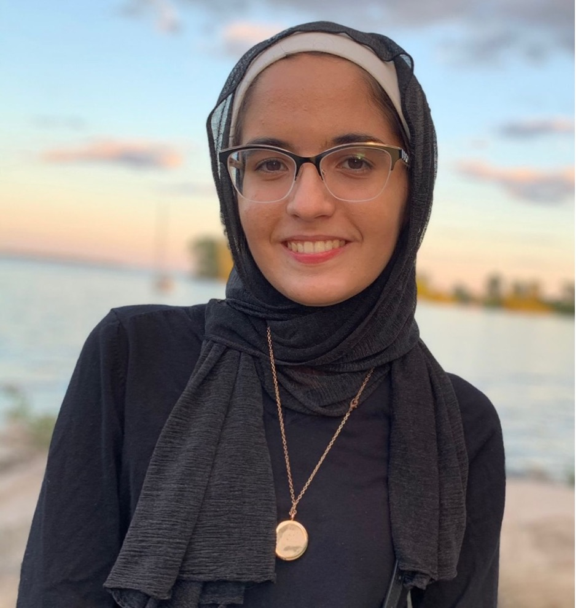
Nour Hanafi is a PhD student in the Department of Medical Biophysics at the University of Toronto (U of T). She completed her undergraduate degree in Molecular Biology with a Chemistry minor at U of T Mississauga, an MHSc in Medical Genomics at U of T, and worked as an analyst at the SickKids’ Centre for Computational Medicine. In her free time, she enjoys long walks, trying out new iced drinks, and watching her favorite sports teams, Atletico Madrid and the Toronto Raptors.
Research interests: Protein structure and motion, variant effect, pentrance and expressivity, rare disease and cancer genetics

Alexander Turco is a MSc student in the Department of Medical Biophysics at the University of Toronto (U of T). He completed his undergraduate degree in Bioinformatics with a research specialization at McMaster University. In his free time, he enjoys Rubiks cubes, snowboarding, building computers, and playing his favorite video game, Stardew Valley.
Research interests: DNA sequencing, non-coding and dark genome, non-B DNA, tandem repeat expansions, machine learning for genomics
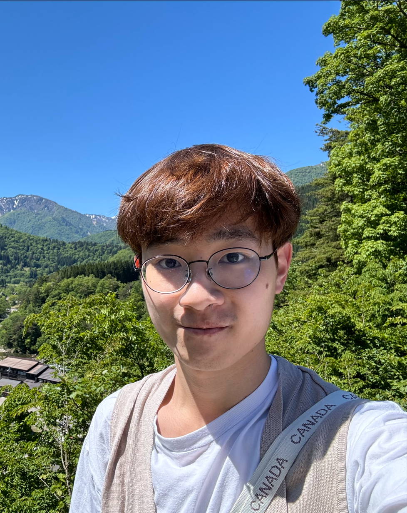
Hayden is a MSc student in Applied Computing at University of Toronto. Before that, he completed his undergraduate degree in Computer Science and Mathematics in Hong Kong. His interest surrounds computer vision and enhancing machine learning pipelines for industry uses. In leisure time, he likes hiking, bouldering, and snowboarding.
Research interests: computer vision, machine learning
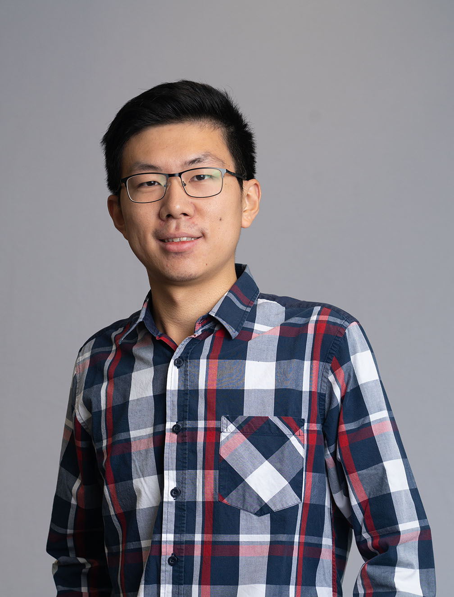
Mingjie Zhao is a MSc student in Applied Computing at the University of Toronto. He completed his undergraduate degree in Statistics and Data Science at the University of Waterloo. Outside of his studies, he enjoys long walks, cooking, and exploring his creativity through drawing and painting.
Research interests: Protein language models, protein structure, machine learning, liquid-liquid-phase separation
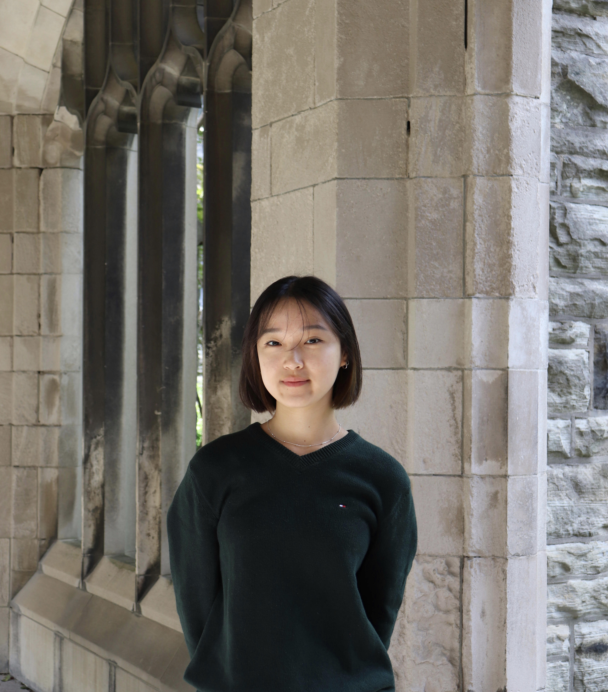
Wendy Wan is an undergraduate student in the lab. She is completing her undergraduate degree in Bioinformatics and Computational Biology at the University of Toronto. She is interested in learning about bioinformatics methods, coding, and design. Outside of the lab, she enjoys attending music festivals, exploring new cafes and restaurants, and watch food videos.
Research interests: computer vision, machine learning
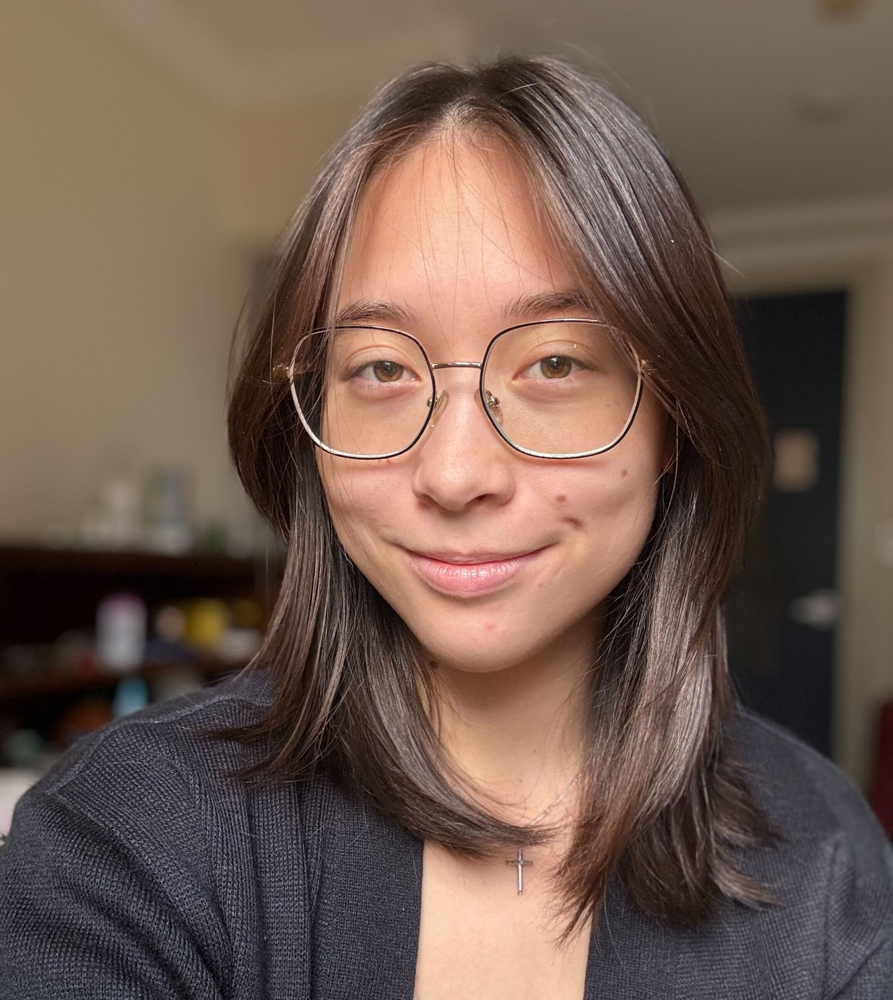
Julia Gilley is an undergraduate student in the lab. She is completing a double major in Bioinformatics and Computational Biology and Computer Science at the University of Toronto. Her research interests include sequencing technology and optimization. Outside the lab, she enjoys running and video games.
Research interests: loading...
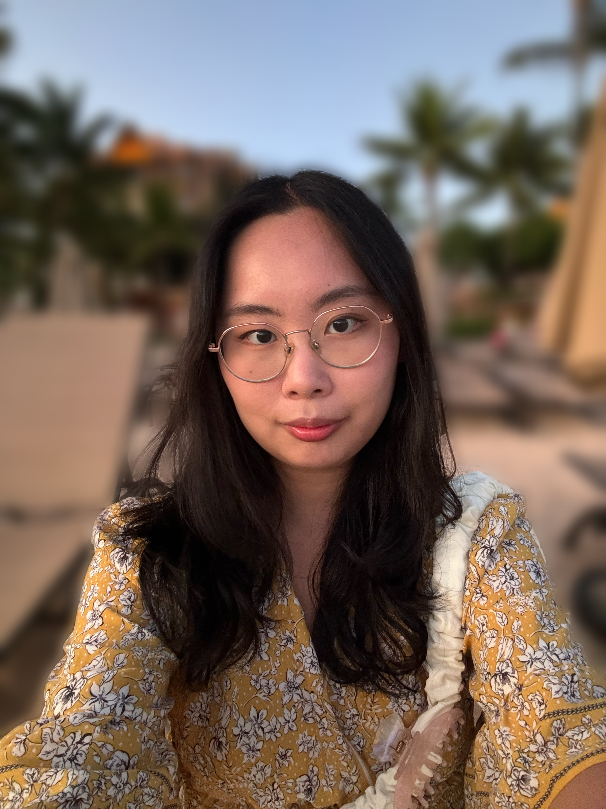
Katie Lee is an undergraduate student in the lab. She is completing her degree in Bioinformatics and Computational Biology at the University of Toronto. She is passionate about computational methods to analyze DNA and mutations. In her free time, she enjoys baking cakes, painting, and playing video games.
Research interests: loading...
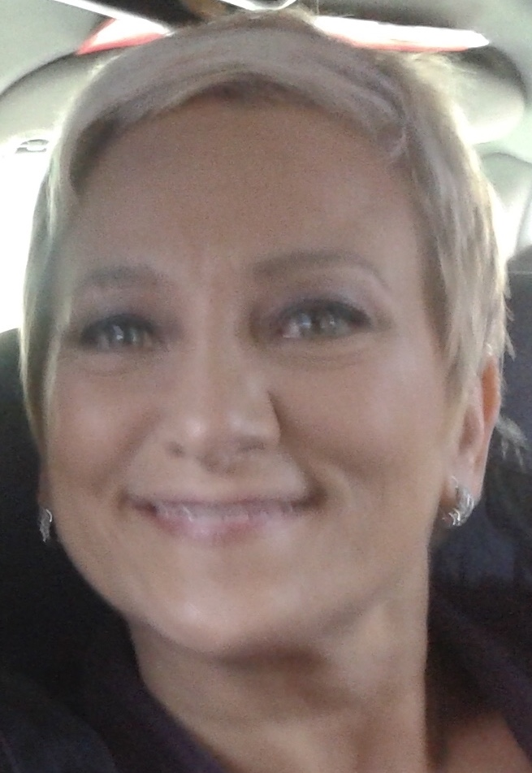
Lucy Fuccilo is the administrative assistant for the CCGLab. She has extensive experience working at princess margaret. Outside of the lab Lucy loves to walk her dog Watson, who is extremely cute.
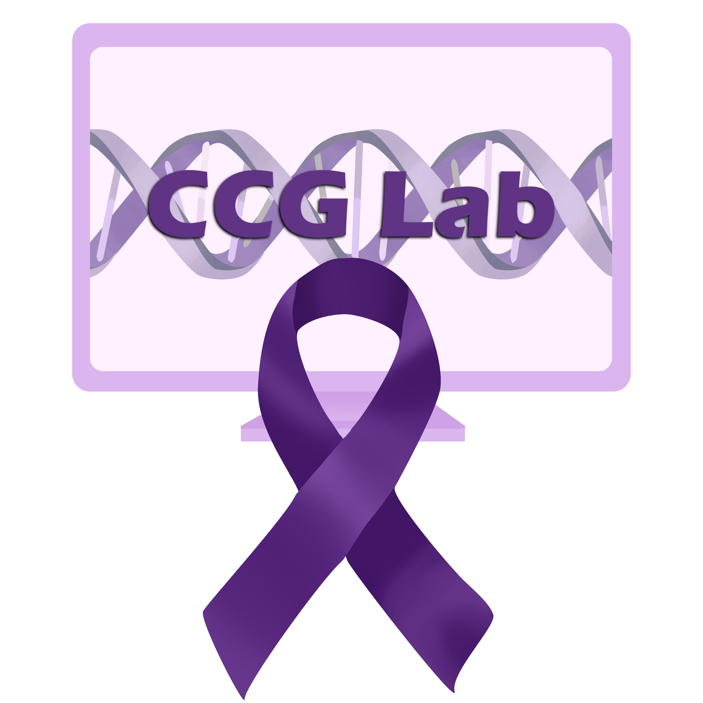
We are looking for enthusiastic researchers and students interested in computational biology and cancer research to JOIN US!
Alumni
Shaoshi Zhang (Current Position: Graduate Student at the University of Western Ontario)
Grace Hu (Current Position: MD Student at the University of Toronto)
Luke Zhang (Current Position: PhD Student at the University of Toronto)
Jean Yaacoub (Current Position: Software engineer @ Google)
Yumika Shiba (Current Position: PhD Student at the University of Toronto)
Victoria Valeeva (Current Position: PhD Student at the University of British Columbia)
Jackson Howe (Current Position: Graduate Management Rotation @ Labatt)